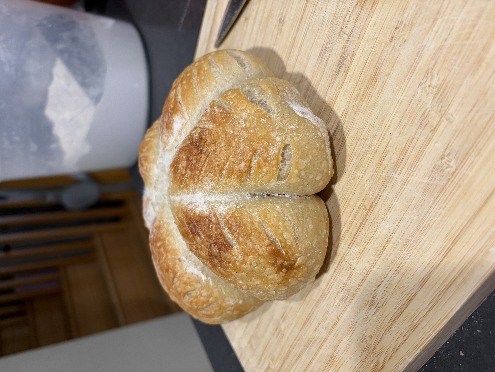
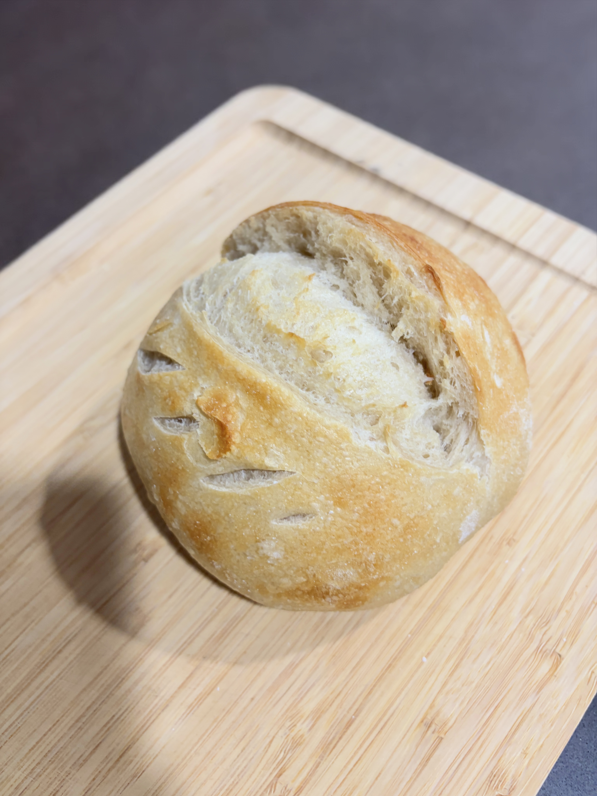
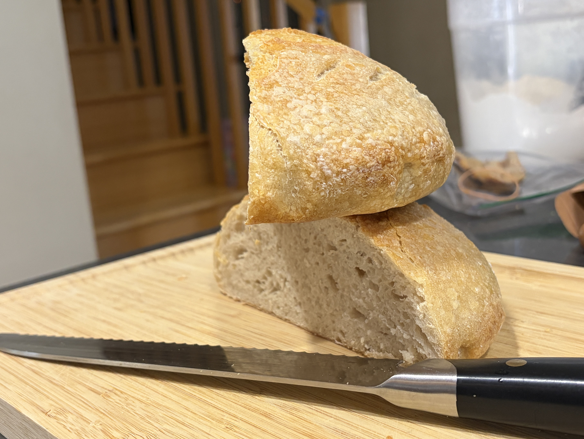

WELCOME TO FROM MATT
STARTING TOGETHER
Learn, bake, and grow with a community that helps support and guide the love and fustrations that can come with learing how to bake sourdough.
EXPLORE THE GALLERY


Welcome In
Learn, Bake, Share
From Matt is for new and experienced bakers who want to learn together. Look through the gallery, ask questions, and find unique resources from experiences provided by the From Matt community!
About
As a beginner, I turned to social media and the web to learn how to make a loaf. I was lucky enough to receive a starter at the start of my baking adventure, but I didn’t know how to use it properly. At one point, I thought I'd accidentally killed my starter and made a new one by following an Instagram video; after much confusion, I realized I'd actually made sourdough starter. Today, I still use that same starter to make amazing loaves my friends, neighbors, and family enjoy. I named that surviving starter Matt, after Matt Brunson, a member of the American sludge metal band Crowbar, and for my sister, who loves that genre and band. Although Matt makes great loaves, it took time, patience, videos, and many deep breaths to get to where I am now. I wanted to create a community that welcomes all sourdough bakers while helping beginners like me by sharing personal baking experiences, recipes, and troubleshooting tips to offer one-of-a-kind knowledge and advice. Having a space to learn and grow with others in similar situations not only builds a strong community but may also help you find what works best for you!
